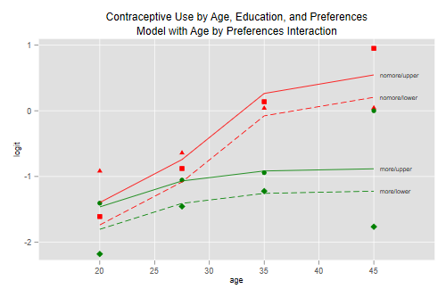
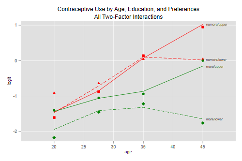
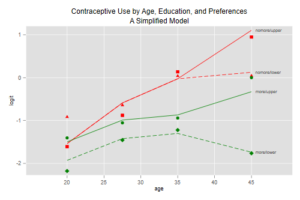

We now move to an analysis using all three predictors: age, desire for no more children, and education, which is grouped into two categories: lower primary or less, and upper primary or more. The data can be read from the datasets section. We will use the wider format, that has 16 rows; one for each combination of the three predictors, with columns for users and nonusers. (The last section shows how one can obtain the same results using the longer format, that has 32 rows: one for each combination of the three predictors and response, with a column for the frequency of that combination.)
. use https://grodri.github.io/datasets/cusew, clear
(Contraceptive Use Data (Fiji, 1976))
. gen n = users + nonusers
. list, sep(4)
┌────────────────────────────────────────────────────────────────────────┐
│ age educ nomore nonusers users n │
├────────────────────────────────────────────────────────────────────────┤
1. │ <25 Lower primary or less Wants more 53 6 59 │
2. │ <25 Lower primary or less Wants no more 10 4 14 │
3. │ <25 Upper primary or more Wants more 212 52 264 │
4. │ <25 Upper primary or more Wants no more 50 10 60 │
├────────────────────────────────────────────────────────────────────────┤
5. │ 25-29 Lower primary or less Wants more 60 14 74 │
6. │ 25-29 Lower primary or less Wants no more 19 10 29 │
7. │ 25-29 Upper primary or more Wants more 155 54 209 │
8. │ 25-29 Upper primary or more Wants no more 65 27 92 │
├────────────────────────────────────────────────────────────────────────┤
9. │ 30-39 Lower primary or less Wants more 112 33 145 │
10. │ 30-39 Lower primary or less Wants no more 77 80 157 │
11. │ 30-39 Upper primary or more Wants more 118 46 164 │
12. │ 30-39 Upper primary or more Wants no more 68 78 146 │
├────────────────────────────────────────────────────────────────────────┤
13. │ 40-49 Lower primary or less Wants more 35 6 41 │
14. │ 40-49 Lower primary or less Wants no more 46 48 94 │
15. │ 40-49 Upper primary or more Wants more 8 8 16 │
16. │ 40-49 Upper primary or more Wants no more 12 31 43 │
└────────────────────────────────────────────────────────────────────────┘
We start by considering models that treat age as a factor with four categories, fertility preferences using an indicator for wanting no more, and educational level using an indicator for upper primary or more. Because we have only three variables we are able to fit all possible models, which provides a nice check on the usual model building strategies using forward selection and backward elimination.
Let us reproduce Table 3.13, which compares all possible one, two and three-factor models.
The first step will be to fit the model with the three-factor interaction, which is saturated for the 2x4x2x2 table of contraceptive use by age, education, and desire for more children. We will store the log-likelihood and d.f. in two scalars, and save the fitted values for later plotting.
. quietly glm users i.age##c.nomore##c.educ, family(binomial n) . scalar slogL = e(ll) . scalar sdf = e(df_m) . predict obs3, xb // 3-way model
::: Next we are going to fit 16 different models. Given the repetitive nature of the calculations it pays to plan in advance. I will create three variables to store the name, deviance and d.f. of each model, using a string of up to 36 characters for the model name. :::
. set obs 17 Number of observations (_N) was 16, now 17. . gen str36 model = "" (17 missing values generated) . gen deviance = . (17 missing values generated) . gen df = . (17 missing values generated)
We then write a simple command that takes as arguments the name and
specification of the model, fits it, and stores the name, deviance and
d.f. in the three variables just defined, using a global macro
n to keep track of the number of the row where the results
will be stored.
. capture program drop mfit . program mfit 1. version 11 2. args model formula 3. quietly glm users `formula', family(binomial n) 4. global n = $n + 1 5. quietly replace model = "`model'" in $n 6. quietly replace deviance = e(deviance) in $n 7. quietly replace df = sdf - e(df_m) in $n 8. end
Finally I initialize the row number to 0 and fit the models, taking care to enclose the model name and formula in quotes to ensure that they are treated as just two arguments rather than split into words
. set obs 17 Number of observations (_N) was 17, now 17. . global n = 0 . // one-factor models . mfit Age i.age . mfit Education educ . mfit "NoMore" nomore . // two-factor additive models . mfit "Age + Education" "i.age educ" . mfit "Age + NoMore" "i.age nomore" . mfit "Education + NoMore" "educ nomore" . // two-factor interactions . mfit "Age * Education" "i.age##c.educ" . mfit "Age * NoMore" "i.age##c.nomore" . mfit "Education * NoMore" "c.educ##c.nomore" . // three-factor additive model . mfit "Age + Education + NoMore" "i.age c.educ c.nomore" . // one interaction . mfit "Age * Education + NoMore" "i.age##c.educ nomore" . mfit "Age * NoMore + Education" "i.age##c.nomore educ" . mfit "Age + Education * NoMore" "i.age c.nomore##c.educ" . // two interactions . mfit "Age * (Education + NoMore)" "i.age##c.educ i.age##c.nomore" . mfit "Education * (Age + NoMore)" "i.age##c.educ c.educ##c.nomore" . mfit "NoMore * (Age + Education)" "i.age##c.nomore c.educ##c.nomore" . // three interactions . mfit "Age*Educ+Age*NoMore+Educ*NoMore" /// > "i.age##c.nomore c.educ i.age#c.educ c.educ#c.nomore"
Done, let’s print the results, using only two decimal places for the deviances
. format deviance %6.2f
. list model deviance df if !missing(deviance), clean
model deviance df
1. Age 86.58 12
2. Education 165.07 14
3. NoMore 74.10 14
4. Age + Education 80.42 11
5. Age + NoMore 36.89 11
6. Education + NoMore 73.87 13
7. Age * Education 73.03 8
8. Age * NoMore 20.10 8
9. Education * NoMore 67.64 12
10. Age + Education + NoMore 29.92 10
11. Age * Education + NoMore 23.15 7
12. Age * NoMore + Education 12.63 7
13. Age + Education * NoMore 23.02 9
14. Age * (Education + NoMore) 5.80 4
15. Education * (Age + NoMore) 13.76 6
16. NoMore * (Age + Education) 10.82 6
17. Age*Educ+Age*NoMore+Educ*NoMore 2.44 3
Please refer to the notes for various tests based on these models. You should be able to test for net effects of each factor given the other two, test each of the interactions, and test the goodness of fit of each model. We now examine three models of interest.
We fit again the three-factor additive model, so we can show the parameter estimates reflecting the net effect of each factor. The gross effects of age and desire or no more children have been shown in earlier sections.
. glm users i.age educ nomore, family(binomial n)
Iteration 0: log likelihood = -50.793156
Iteration 1: log likelihood = -50.712573
Iteration 2: log likelihood = -50.712565
Iteration 3: log likelihood = -50.712565
Generalized linear models Number of obs = 16
Optimization : ML Residual df = 10
Scale parameter = 1
Deviance = 29.91722173 (1/df) Deviance = 2.991722
Pearson = 28.28833641 (1/df) Pearson = 2.828834
Variance function: V(u) = u*(1-u/n) [Binomial]
Link function : g(u) = ln(u/(n-u)) [Logit]
AIC = 7.089071
Log likelihood = -50.7125647 BIC = 2.191335
─────────────┬────────────────────────────────────────────────────────────────
│ OIM
users │ Coefficient std. err. z P>|z| [95% conf. interval]
─────────────┼────────────────────────────────────────────────────────────────
age │
25-29 │ .3893816 .1758501 2.21 0.027 .0447219 .7340414
30-39 │ .9086135 .1646211 5.52 0.000 .5859621 1.231265
40-49 │ 1.189239 .21443 5.55 0.000 .7689639 1.609514
│
educ │ .3249947 .1240355 2.62 0.009 .0818894 .5680999
nomore │ .8329548 .1174705 7.09 0.000 .6027169 1.063193
_cons │ -1.966169 .1720307 -11.43 0.000 -2.303343 -1.628995
─────────────┴────────────────────────────────────────────────────────────────
. di exp(_b[educ])
1.3840232
Contraceptive use differs by each of these factors, even when we compare women who fall in the same categories of the other two. For example the odds of using contraception are 38% higher among women with upper primary or more, compared to women with lower primary or less, in the same age group and category of desire for more children.
The deviance of 29.92 on 10 d.f. tells us that this model does not fit the data, so the assumption that logit differences by one variable are the same across categories of the other two is suspect.
Of the three models with one interaction term, the one that achieves the largest improvement in fit compared to the additive model is the model with an age by no more interaction, where the difference in logits between women who want no more children and those who do varies by age.
The standard reference-cell parametrization can easily be obtained using factor variables:
. glm users educ i.age##c.nomore, family(binomial n)
Iteration 0: log likelihood = -42.121099
Iteration 1: log likelihood = -42.068742
Iteration 2: log likelihood = -42.06873
Iteration 3: log likelihood = -42.06873
Generalized linear models Number of obs = 16
Optimization : ML Residual df = 7
Scale parameter = 1
Deviance = 12.62955292 (1/df) Deviance = 1.804222
Pearson = 13.06280922 (1/df) Pearson = 1.866116
Variance function: V(u) = u*(1-u/n) [Binomial]
Link function : g(u) = ln(u/(n-u)) [Logit]
AIC = 6.383591
Log likelihood = -42.06873029 BIC = -6.778568
─────────────┬────────────────────────────────────────────────────────────────
│ OIM
users │ Coefficient std. err. z P>|z| [95% conf. interval]
─────────────┼────────────────────────────────────────────────────────────────
educ │ .3406479 .1257653 2.71 0.007 .0941525 .5871432
│
age │
25-29 │ .3946039 .2014504 1.96 0.050 -.0002315 .7894394
30-39 │ .5466635 .1984206 2.76 0.006 .1577663 .9355607
40-49 │ .5795235 .3474172 1.67 0.095 -.1014017 1.260449
│
nomore │ .0662197 .3307064 0.20 0.841 -.5819529 .7143922
│
age#c.nomore │
25-29 │ .25918 .4097504 0.63 0.527 -.5439161 1.062276
30-39 │ 1.112662 .3740433 2.97 0.003 .3795507 1.845773
40-49 │ 1.361674 .4843256 2.81 0.005 .4124134 2.310935
│
_cons │ -1.803172 .1801786 -10.01 0.000 -2.156315 -1.450028
─────────────┴────────────────────────────────────────────────────────────────
. di exp(_b[nomore]), exp(_b[4.age#c.nomore]), ///
> exp(_b[nomore] + _b[4.age#c.nomore])
1.0684614 3.902721 4.1699068
Make sure you know how to interpret all of these coefficients. For example the ratio of the odds of using contraception among women who want no more children relative to those who want more in the same category of education is 1.07 among women under age 25, but 3.9 times more (giving an odds ratio of 4.1) among women in their forties.
To aid in interpretation and model criticism we can plot the observed
and fitted logits, effectively reproducing Figure 3.4. Because we will
need more than one plot, I will encapsulate the calculations in a
command pof, for plot observed and
fitted.
. capture program drop pof
. program pof
1. args obs fit more
2. // build labels for the curves using fit at last age
. local labels `""nomore/upper" "nomore/lower" "more/upper" "more/lower""'
3. local text
4. forvalues i=1/16 {
5. if age[`i'] != 4 continue
6. local k = 4 - 2*nomore[`i'] - educ[`i']
7. local label: word `k' of `labels'
8. local value = round(`fit'[`i'], 0.01)
9. local text `text' `value' 45.5 "`label'"
10. }
11. // plot observed and fitted logits
. twoway ///
> (scatter `obs' agem if educ==1 & nomore==1, ms(S) mc(red)) ///
> (scatter `obs' agem if educ==0 & nomore==1, ms(T) mc(red)) ///
> (scatter `obs' agem if educ==1 & nomore==0, ms(O) mc(green)) ///
> (scatter `obs' agem if educ==0 & nomore==0, ms(D) mc(green) ) ///
> (line `fit' agem if educ==1 & nomore==1, lp(solid) lc(red)) ///
> (line `fit' agem if educ==0 & nomore==1, lp(dash) lc(red) ) ///
> (line `fit' agem if educ==1 & nomore==0, lp(solid) lc(green)) ///
> (line `fit' agem if educ==0 & nomore==0, lp(dash) lc(green)) ///
> , title("Contraceptive Use by Age, Education, and Preferences") ///
> xtitle(age) ytitle(logit) legend(off) `more' ///
> xsc(range(15 50)) text(`text', placement(r) size(vsmall))
12. end
The plot combines four scatterplots and four line plots, one for each subgroup defined by education and desire for more children. The command takes as arguments the names of variables with the observed and fitted value and an optional string to be passed along as an option to the graph twoway command. I use the same markers as in the notes, but with what I hope is a better legend.
So here’s our first plot
. recode age (1=20) (2=27.5) (3=35) (4=45), gen(agem) (16 differences between age and agem) . gen obs = log(users/nonusers) (1 missing value generated) . predict lfit31, xb (1 missing value generated) . pof obs lfit31 "subtitle(Model with Age by Preferences Interaction)" . graph export fig34.png, width(500) replace file fig34.png saved as PNG format

I often find that interpretation of the interactions is more direct if I combine them with the main effects. Here is the same model showing the difference in logits by desire for more children in each age group, reproducing the results in Table 3.15
. glm users i.age i.age#c.nomore educ, family(binomial n)
Iteration 0: log likelihood = -42.121099
Iteration 1: log likelihood = -42.068742
Iteration 2: log likelihood = -42.06873
Iteration 3: log likelihood = -42.06873
Generalized linear models Number of obs = 16
Optimization : ML Residual df = 7
Scale parameter = 1
Deviance = 12.62955292 (1/df) Deviance = 1.804222
Pearson = 13.06280922 (1/df) Pearson = 1.866116
Variance function: V(u) = u*(1-u/n) [Binomial]
Link function : g(u) = ln(u/(n-u)) [Logit]
AIC = 6.383591
Log likelihood = -42.06873029 BIC = -6.778568
─────────────┬────────────────────────────────────────────────────────────────
│ OIM
users │ Coefficient std. err. z P>|z| [95% conf. interval]
─────────────┼────────────────────────────────────────────────────────────────
age │
25-29 │ .3946039 .2014504 1.96 0.050 -.0002315 .7894394
30-39 │ .5466635 .1984206 2.76 0.006 .1577663 .9355607
40-49 │ .5795235 .3474172 1.67 0.095 -.1014017 1.260449
│
age#c.nomore │
<25 │ .0662197 .3307064 0.20 0.841 -.5819529 .7143922
25-29 │ .3253996 .2419217 1.35 0.179 -.1487581 .7995574
30-39 │ 1.178882 .1748169 6.74 0.000 .836247 1.521517
40-49 │ 1.427894 .3538467 4.04 0.000 .7343668 2.121421
│
educ │ .3406479 .1257653 2.71 0.007 .0941525 .5871432
_cons │ -1.803172 .1801786 -10.01 0.000 -2.156315 -1.450028
─────────────┴────────────────────────────────────────────────────────────────
. estimates store mint
. di exp(_b[educ])
1.4058581
. mata exp(st_matrix("e(b)")[5..8])
1 2 3 4
┌─────────────────────────────────────────────────────────┐
1 │ 1.068461402 1.384583879 3.250737129 4.169906768 │
└─────────────────────────────────────────────────────────┘
.
We find 34% higher odds of using contraception among women with some education, compared to women with no education in the same age group and category of desire. We also see that the odds of using contraception among women who want no more children are higher than among women who want more children in the same age and category of education, 7% higher under age 25, 38% higher at age 25-29, three times as high for women in their thirties, and four times as high among women in their forties.
This model passes the conventional goodness of fit test and therefore provides a reasonable description of contraceptive use by age, education, and desire for more children.
As explained in the notes, there is some evidence that education may interact with the other two variables. The model with all three two-factor interactions provides the best fit, with a deviance of 2.44 on three d.f., but is substantially more complex.
Rather than present parameter estimates, I will reproduce Figure 3.5,
which provides some hints on how the model could be simplified. Thanks
to our pof command this is now an easy task:
. quietly glm users i.age educ nomore /// > i.age#c.educ i.age#c.nomore c.educ#c.nomore, family(binomial n) . predict lfit32, xb (1 missing value generated) . pof obs lfit32 "subtitle(All Two-Factor Interactions)" . graph export fig35.png, width(500) replace file fig35.png saved as PNG format

A picture is indeed worth a thousand words. We see that among women who want no more children, contraceptive use increases almost linearly (in the logit scale) with age, with no differences by education except in the oldest age group, where use flattens for women with no education. Among women who do want more children, contraceptive use is generally lower, and increases more slowly with age; there are some differences by education, and these are higher among older women. There’s also a hint of curvature by age for women with no education who want more children.
These observations suggest ways to simplify the model. The age interactions are quite simple: the increase with age is steeper among women who want no more children, and the difference by education is larger among women in their forties. Similarly, the educational difference is larger in use for spacing and among older women.
One way to capture these features is to use a quadratic on age, allow the slope (but not the curvature) to vary by desire for more children, and introduce effects of education only for spacing and after age 40 (and thus not for limiting before age 40). To facilitate interpretation of the resulting parameters I center age around 30:
. gen agemc = agem - 30 (1 missing value generated) . gen agemcsq = agemc^2 (1 missing value generated) . gen educ_spacers = educ * (1-nomore) (1 missing value generated) . gen educ_forties = educ * (age==4) (1 missing value generated)
So here is a more parsimonious model
. glm users c.agemc##c.nomore agemcsq c.educ_spacers educ_forties, ///
> family(binomial n)
Iteration 0: log likelihood = -38.692269
Iteration 1: log likelihood = -38.686338
Iteration 2: log likelihood = -38.686338
Generalized linear models Number of obs = 16
Optimization : ML Residual df = 9
Scale parameter = 1
Deviance = 5.864768279 (1/df) Deviance = .6516409
Pearson = 5.950841275 (1/df) Pearson = .6612046
Variance function: V(u) = u*(1-u/n) [Binomial]
Link function : g(u) = ln(u/(n-u)) [Logit]
AIC = 5.710792
Log likelihood = -38.68633797 BIC = -19.08853
─────────────┬────────────────────────────────────────────────────────────────
│ OIM
users │ Coefficient std. err. z P>|z| [95% conf. interval]
─────────────┼────────────────────────────────────────────────────────────────
agemc │ .0247552 .0118884 2.08 0.037 .0014543 .0480561
nomore │ .9804174 .1790475 5.48 0.000 .6294907 1.331344
│
c.agemc#│
c.nomore │ .058961 .0183799 3.21 0.001 .0229371 .0949849
│
agemcsq │ -.0034306 .0010318 -3.32 0.001 -.0054529 -.0014083
educ_spacers │ .432112 .1808991 2.39 0.017 .0775563 .7866677
educ_forties │ .9798156 .3462926 2.83 0.005 .3010945 1.658537
_cons │ -1.339265 .1578254 -8.49 0.000 -1.648597 -1.029933
─────────────┴────────────────────────────────────────────────────────────────
This model has only seven parameters and a deviance of 5.9 on 9 d.f., so it is much simpler than the previous model and fits pretty well. Obviously we can’t take the test seriously because we didn’t specify these terms in advance, but the exercise shows how one can simplify a model by capturing its essential features. Before we interpret the coefficients let us check the fitted values
. predict lfit33, xb (1 missing value generated) . pof obs lfit33 "subtitle(A Simplified Model)" . graph export fig35b.png, width(500) replace file fig35b.png saved as PNG format

We see that the model provides almost the same fit as the much more complex model of the previous subsection.
. di exp(_b[agemc]) 1.0250641 . di exp(_b[nomore]), exp(_b[c.agemc#c.nomore]) 2.6655686 1.0607339 . di exp(_b[educ_spacers]), exp(_b[educ_forties]) 1.5405076 2.6639649
Returning to the parameter estimates, we see that contraceptive use generally increases with age, with an increment in the odds of about 2.5 percent per year at age 30 (less at younger and older ages, with differences noted below after age 40). Use is much higher among women who want no more children, with an odds ratio of 2.7 at age 30, increasing about six percent per year of age. Women with some education are more likely to use contraception for spacing purposes, with an odds ratio of 1.5, and are also more likely to use for either spacing or limiting after age 40, with an odds ratio of 2.7 (which makes the odds ratio by education for spacers after age 40 just above four).
Alternative model simplifications are given in the notes.
As promised, we show briefly how one can obtain the same results
using a dataset with one row for each combination of predictors and
response, with a column indicating the frequency of that combination,
effectively simulating individual data. This lets us use the
logit or logistic commands in Stata.
We will illustrate the equivalence using the model with a main effect
of education and an interaction between age and wanting no more
children, which we kept as mint.
. // use https://grodri.github.io/datasets/cuse, clear
. use cuse, clear
(Contraceptive Use Data (Fiji, 1976))
. gen nomore = desire==1
. list in 1/4
┌──────────────────────────────────────────────────────────────────┐
│ age educ desire cuse n nomore │
├──────────────────────────────────────────────────────────────────┤
1. │ <25 Lower primary or less Wants more No 53 0 │
2. │ <25 Lower primary or less Wants more Yes 6 0 │
3. │ <25 Lower primary or less Wants no more No 10 1 │
4. │ <25 Lower primary or less Wants no more Yes 4 1 │
└──────────────────────────────────────────────────────────────────┘
. logit cuse educ i.age i.age#c.nomore [fw=n]
Iteration 0: log likelihood = -1001.8468
Iteration 1: log likelihood = -926.33767
Iteration 2: log likelihood = -925.27593
Iteration 3: log likelihood = -925.27536
Iteration 4: log likelihood = -925.27536
Logistic regression Number of obs = 1,607
LR chi2(8) = 153.14
Prob > chi2 = 0.0000
Log likelihood = -925.27536 Pseudo R2 = 0.0764
─────────────┬────────────────────────────────────────────────────────────────
cuse │ Coefficient Std. err. z P>|z| [95% conf. interval]
─────────────┼────────────────────────────────────────────────────────────────
educ │ .3406479 .1257653 2.71 0.007 .0941525 .5871432
│
age │
25-29 │ .3946039 .2014504 1.96 0.050 -.0002315 .7894394
30-39 │ .5466635 .1984206 2.76 0.006 .1577663 .9355607
40-49 │ .5795235 .3474172 1.67 0.095 -.1014017 1.260449
│
age#c.nomore │
<25 │ .0662197 .3307064 0.20 0.841 -.5819529 .7143922
25-29 │ .3253996 .2419217 1.35 0.179 -.1487581 .7995574
30-39 │ 1.178882 .1748169 6.74 0.000 .836247 1.521517
40-49 │ 1.427894 .3538467 4.04 0.000 .7343668 2.121421
│
_cons │ -1.803172 .1801786 -10.01 0.000 -2.156315 -1.450028
─────────────┴────────────────────────────────────────────────────────────────
. estimates store mintlong
. estimates table mint mintlong, equation(1) se
─────────────┬──────────────────────────
Variable │ mint mintlong
─────────────┼──────────────────────────
age │
25-29 │ .39460393 .39460393
│ .20145036 .20145036
30-39 │ .54666349 .54666349
│ .19842057 .19842057
40-49 │ .57952354 .57952354
│ .34741724 .34741724
│
age#c.nomore │
<25 │ .06621967 .06621967
│ .33070636 .33070636
25-29 │ .32539965 .32539965
│ .24192168 .24192168
30-39 │ 1.1788818 1.1788818
│ .17481688 .17481688
40-49 │ 1.4278937 1.4278937
│ .35384674 .35384674
│
educ │ .34064785 .34064785
│ .12576526 .12576526
_cons │ -1.8031718 -1.8031718
│ .18017863 .18017863
─────────────┴──────────────────────────
Legend: b/se
As you can see, the estimates and standard errors are exactly the same as before. The deviance is different because in this dataset the saturated model would have a separate parameter for each woman. We can reproduce the deviance of 12.63 on 7 d.f. given earlier, by computing the difference in deviances (or twice the difference in log-likelihoods) between the model with a three factor interaction and this model:
. quietly logit cuse i.educ##i.age##c.nomore [fw=n] . lrtest mintlong . Likelihood-ratio test Assumption: mintlong nested within . LR chi2(7) = 12.63 Prob > chi2 = 0.0817
Thus, working with grouped data gives exactly the same estimates as working with individual data, except of course for the deviances. Recall that deviances can be interpreted as goodness of fit tests only with grouped data, but differences in deviances between nested models can always be interpreted as likelihood ratio tests. We discuss how to test goodness of fit with individual data in Section 3.8.
Updated fall 2022